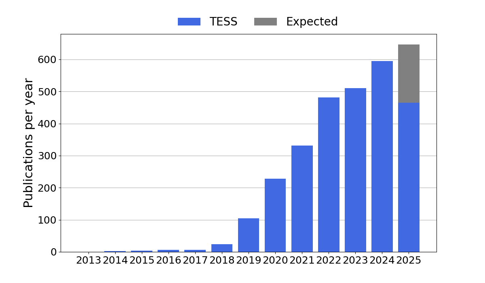

We request that scientific publications using data obtained from the TESS project include one of the following acknowledgments:
This paper includes data collected by the TESS mission. Funding for the TESS mission is provided by the NASA's Science Mission Directorate.
Publication database
The TESS Science Support Center curates a list of scientific publications pertaining to TESS. The database contains 2755 publications, of which 2504 are peer-reviewed. It demonstrates the important impact of TESS data on astronomical research.
You can access the full publication list:
Or seach by topic:
If you spot an error in the database, such as a missing entry, please get in touch or open an issue in the GitHub repository of the database.
Last update: 11 Jun 2025.
Breakdown by year & mission
The graph below shows the number of publications as a function of year.

Breakdown by subject
Both TESS data have been used for scientific applications that reach far beyond exoplanet research. While 1091 works relate to exoplanets (40%), a total of 1664 pertain to other areas of astrophysics (60%).

Most-cited publications
TESS publications have cumulatively been cited 45129 times. The list below shows the most-cited publications, based on the citation count obtained from NASA ADS.
-
TRANSITING EXOPLANET SURVEY SATELLITE (TESS)
Ricker, George R., Winn, Joshua N., Vanderspek, Roland, et al.
2015JATIS...1a4003R 3424 citations -
THE REVISED TESS INPUT CATALOG AND CANDIDATE TARGET LIST
Stassun, Keivan G., Oelkers, Ryan J., Paegert, Martin, et al.
2019AJ....158..138S 856 citations -
THE TESS INPUT CATALOG AND CANDIDATE TARGET LIST
Stassun, Keivan G., Oelkers, Ryan J., Pepper, Joshua, et al.
2018AJ....156..102S 592 citations -
A FRAMEWORK FOR PRIORITIZING THE TESS PLANETARY CANDIDATES MOST AMENABLE TO ATMOSPHERIC CHARACTERIZATION
Kempton, Eliza M. -R., Bean, Jacob L., Louie, Dana R., et al.
2018PASP..130k4401K 461 citations -
THE TRANSITING EXOPLANET SURVEY SATELLITE: SIMULATIONS OF PLANET DETECTIONS AND ASTROPHYSICAL FALSE POSITIVES
Sullivan, Peter W., Winn, Joshua N., Berta-Thompson, Zachory K., et al.
2015ApJ...809...77S 416 citations -
THE TESS OBJECTS OF INTEREST CATALOG FROM THE TESS PRIME MISSION
Guerrero, Natalia M., Seager, S., Huang, Chelsea X., et al.
2021ApJS..254...39G 309 citations -
PHOTOMETRY OF 10 MILLION STARS FROM THE FIRST TWO YEARS OF TESS FULL FRAME IMAGES: PART I
Huang, Chelsea X., Vanderburg, Andrew, Pál, Andras, et al.
2020RNAAS...4..204H 294 citations -
STELLAR FLARES FROM THE FIRST TESS DATA RELEASE: EXPLORING A NEW SAMPLE OF M DWARFS
Günther, Maximilian N., Zhan, Zhuchang, Seager, Sara, et al.
2020AJ....159...60G 286 citations -
LIMB AND GRAVITY-DARKENING COEFFICIENTS FOR THE TESS SATELLITE AT SEVERAL METALLICITIES, SURFACE GRAVITIES, AND MICROTURBULENT VELOCITIES
Claret, A.
2017A&A...600A..30C 280 citations -
A REVISED EXOPLANET YIELD FROM THE TRANSITING EXOPLANET SURVEY SATELLITE (TESS)
Barclay, Thomas, Pepper, Joshua, Quintana, Elisa V.
2018ApJS..239....2B 259 citations